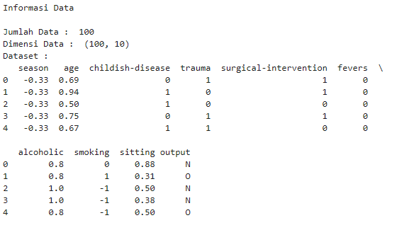
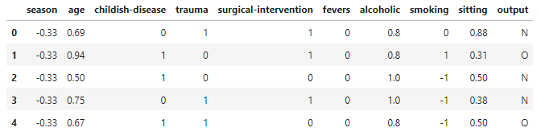
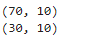
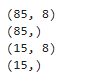
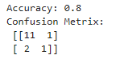
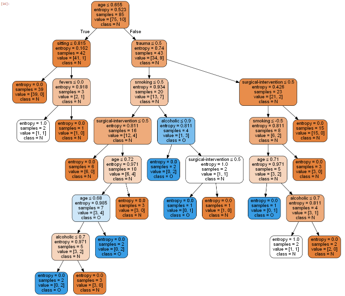
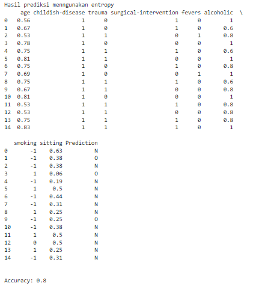
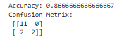
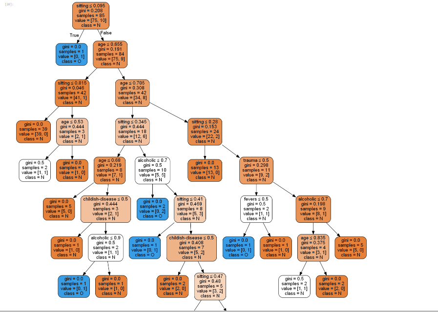
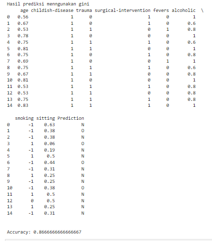

Decision Tree Data Mining¶
Dasar Teori¶
Decision tree merupakan suatu metode klasifikasi yang menggunakan struktur pohon, dimana setiap node merepresentasikan atribut dan cabangnya merepresentasikan nilai dari atribut, sedangkan daunnya digunakan untuk merepresentasikan kelas. Node teratas dari decision tree disebut dengan root.

Dalam mengklasifikasikan data, model prediksi menggunakan struktur pohon/ berhirarki ini memiliki kemampuan untuk mem-break-down proses pengambilan keputusan yang kompleks menjadi simpel. Pengambilan keputusan akan lebih menginterpretasikan solusi dari permasalahan yang dapat menangani tipe data kategorikal dan numerik.. Semakin banyak cabang pada pohon keputusan maka akan semakin banyak rule (aturan). Pada gambar di atas Hasil akhirnya, Node keputusan (Outlook) memiliki dua atau lebih cabang (Sunny, Overcast, dan Rainy). Node daun (Play) mewakili klasifikasi atau keputusan. Node keputusan teratas dalam pohon yang sesuai dengan prediktor terbaik disebut simpul akar.
Pembahasan pada halaman ini mengenai bagaimana Decision Tree dapat diimplementasikan dengan library "Scikit-Learn Python".
Konsep Decision Tree¶
Decision Tree adalah salah satu algoritma paling kuat dan populer. Algoritma decision-tree termasuk dalam kategori algoritma pembelajaran supervised yang bekerja untuk variabel output kontinuitas maupun kategoris.

- Root Node adalah bagian yang mewakili seluruh populasi atau sampel yang terbagi menjadi dua atau lebih set homogen.
- Splitting adalah proses membagi sebuah node menjadi dua atau lebih sub-node.
- Decision Node adalah pembagian sub-node yang terbagi menjadi beberapa sub-node
- Leaf/ Terminal Node adalah Node tanpa anak (tanpa pemisahan lebih lanjut) disebut Leaf atau Terminal node.
- Pruning adalah proses mengurangi ukuran pohon keputusan dengan menghapus node.
- Branch / Sub-Tree adalah Sub bagian pohon keputusan .
- Parent and Child Node adalah Sebuah node yang dibagi menjadi beberapa sub-node disebut parent node dari sub-node dimana sebagai sub-node adalah anak dari node induk.
Algoritma Decision Tree¶
-
Tempatkan atribut terbaik dari dataset kami di akar pohon.
-
Membagi set pelatihan menjadi himpunan bagian. Subset harus dibuat sedemikian rupa sehingga setiap subset berisi data dengan nilai yang sama untuk suatu atribut.
-
Ulangi langkah 1 dan langkah 2 pada setiap subset sampai Anda menemukan simpul daun di semua cabang pohon.
Saat membangun classifier pohon keputusan, dapat meningkatkan akurasinya dengan menyetelnya dengan parameter yang berbeda. Dalam memprediksi data dengan metode Decision Tree menggunakan salah satu dari 2 kriteria yaitu “gini index” atau “information gain”.
Rumus Perhitungan Gini Index dan Information Gain¶
Gini Index¶
Rumus Gini Index:

Atau

Indeks Gini adalah metrik untuk mengukur seberapa sering elemen yang dipilih secara acak akan diidentifikasi secara salah. Itu berarti atribut dengan indeks gini yang lebih rendah harus lebih disukai.
Information Gain¶
Rumus Information Gain:

Atau
Information Gain adalah ukuran ketidakpastian variabel acak, itu mencirikan ketidakmurnian dari kumpulan contoh yang sewenang-wenang. Semakin tinggi entropi, semakin banyak konten informasinya.

Kelebihan dan Kekurangan¶
Kelebihan¶
- Daerah pengambilan keputusan yang sebelumnya kompleks dan sangat global, dapat diubah menjadi lebih simpel dan spesifik.
- Eliminasi perhitungan-perhitungan yang tidak diperlukan, karena ketika menggunakan metode pohon keputusan maka sample diuji hanya berdasarkan kriteria atau kelas tertentu.
- Fleksibel untuk memilih fitur dari internal node yang berbeda, fitur yang terpilih akan membedakan suatu kriteria dibandingkan kriteria yang lain dalam node yang sama. Kefleksibelan metode pohon keputusan ini meningkatkan kualitas keputusan yang dihasilkan jika dibandingkan ketika menggunakan metode penghitungan satu tahap yang lebih konvensional.
- Dalam analisis multivariat, dengan kriteria dan kelas yang jumlahnya sangat banyak, seorang penguji biasanya perlu untuk mengestimasikan baik itu distribusi dimensi tinggi ataupun parameter tertentu dari distribusi kelas tersebut. Metode pohon keputusan dapat menghindari munculnya permasalahan ini dengan menggunakan criteria yang jumlahnya lebih sedikit pada setiap node internal tanpa banyak mengurangi kualitas keputusan yang dihasilkan.
Kekurangan¶
- Terjadi overlap terutama ketika kelas-kelas dan criteria yang digunakan jumlahnya sangat banyak. Hal tersebut juga dapat menyebabkan meningkatnya waktu pengambilan keputusan dan jumlah memori yang diperlukan.
- Pengakumulasian jumlah eror dari setiap tingkat dalam sebuah pohon keputusan yang besar.
- Kesulitan dalam mendesain pohon keputusan yang optimal.
- Hasil kualitas keputusan yang didapatkan dari metode pohon keputusan sangat tergantung pada bagaimana pohon tersebut didesain.
Source Code Decision Tree Fertility Dataset¶
Import library Python
import pandas as pd
from sklearn.tree import DecisionTreeClassifier
from sklearn import model_selection
from sklearn import metrics
from sklearn.model_selection import train_test_split
from sklearn.tree import export_graphviz
from sklearn.externals.six import StringIO
import pydotplus
from IPython.display import Imagememuat file csv dan menampilkan data
df=pd.read_csv('fertility.csv')
print("Informasi Data\n")
print("Jumlah Data : ", len(df))
print ("Dimensi Data : ",df.shape)
print ("Dataset :")
print(df.head())
print('\n')Output

Mencetak 5 baris pertama
df.head(5)Output

Splitting dataset ke training dan testing serta mencari hasil
train, test = train_test_split(df, test_size = 0.3,random_state=1234)
print(train.shape)
print(test.shape)Output

Dataset validasi dataset dan Sepertiga data sebagai bagian dari set tes
array = df.values
X = array[:,1:9]
Y = array[:,9]
validation_size = 15
seed = 7
X_train, X_validation, Y_train, Y_validation = model_selection.train_test_split(X, Y, test_size=validation_size, random_state=seed)Mencari hasil
print(X_train.shape)
print(Y_train.shape)
print(X_validation.shape)
print(Y_validation.shape)Ouput

Menghitung dengan menggunakan Entropy
entropy= DecisionTreeClassifier(criterion="entropy",random_state=1234)
#learning
entropy.fit(X_train,Y_train)
#Prediksi
prediction=entropy.predict(X_validation)
#mengevaluasi(Accuracy)
print("Accuracy:",metrics.accuracy_score(prediction,Y_validation))
#evaluation(Confusion Metrix)
print("Confusion Metrix:\n",metrics.confusion_matrix(prediction,Y_validation))Output

Menampilkan Pohon berdasarkan perhitungan Entropy
feature_cols=['age','childish-disease','trauma','surgical-intervention','fevers','alcoholic','smoking','sitting']
dot_data = StringIO()
export_graphviz(entropy, out_file=dot_data,
filled=True, rounded=True,
special_characters=True,feature_names = feature_cols,class_names=['N','O'])
graph = pydotplus.graph_from_dot_data(dot_data.getvalue())
graph.write_png('entropy.png')
Image(graph.create_png())Output

Menampilkan hasil prediksi menggunakan Entropy
print("Hasil prediksi menngunakan entropy")
#Membentuk kembali diperlukan untuk melakukan penggabungan
pred_clf_df = pd.DataFrame(prediction.reshape(15,1))
#Ganti nama kolom untuk menunjukkan prediksi
pred_clf_df.rename(columns={0:'Prediction'}, inplace=True)
#membentuk kembali dataset uji
X_validation_df = pd.DataFrame(X_validation.reshape(15 ,8))
#menggabungkan dua bingkai data panda di atas kolom untuk membuat dataset prediksi
pred_outcome = pd.concat([X_validation_df, pred_clf_df], axis=1, join_axes=[X_validation_df.index])
pred_outcome.rename(columns = {0:'age',1:'childish-disease',2:'trauma',3:'surgical-intervention',4:'fevers',5:'alcoholic',6:'smoking',7:'sitting'}, inplace=True)
#cetak 10 baris prediksi akhir
print((pred_outcome).head(15))
print ("\n")
#mengevaluasi(Accuracy)
print("Accuracy:",metrics.accuracy_score(prediction,Y_validation))Output

Menghitung dengan Menggunakan Gini
gini= DecisionTreeClassifier(criterion="gini",random_state=1234)
#learning
gini.fit(X_train,Y_train)
#Prediksi
prediction_gini=gini.predict(X_validation)
#mengevaluasi(Accuracy)
print("Accuracy:",metrics.accuracy_score(prediction_gini,Y_validation))
#evaluation(Confusion Metrix)
print("Confusion Metrix:\n",metrics.confusion_matrix(prediction_gini,Y_validation))Ouput

Menampilkan Pohon berdasarkan perhitungan Gini
feature_cols=['age','childish-disease','trauma','surgical-intervention','fevers','alcoholic','smoking','sitting']
dot_data = StringIO()
export_graphviz(gini, out_file=dot_data,
filled=True, rounded=True,
special_characters=True,feature_names = feature_cols,class_names=['N','O'])
graph = pydotplus.graph_from_dot_data(dot_data.getvalue())
graph.write_png('gini.png')
Image(graph.create_png())Output

Menampilkan Hasil prediksi dengan menggunakan Gini
print("Hasil prediksi menngunakan gini")
#Membentuk kembali diperlukan untuk melakukan penggabungan
pred_clf_df = pd.DataFrame(prediction_gini.reshape(15,1))
#Ganti nama kolom untuk menunjukkan prediksi
pred_clf_df.rename(columns={0:'Prediction'}, inplace=True)
#membentuk kembali dataset uji
X_validation_df = pd.DataFrame(X_validation.reshape(15 ,8))
#menggabungkan dua bingkai data panda di atas kolom untuk membuat dataset prediksi
pred_outcome = pd.concat([X_validation_df, pred_clf_df], axis=1, join_axes=[X_validation_df.index])
pred_outcome.rename(columns = {0:'age',1:'childish-disease',2:'trauma',3:'surgical-intervention',4:'fevers',5:'alcoholic',6:'smoking',7:'sitting'}, inplace=True)
#cetak 10 baris prediksi akhir
print((pred_outcome).head(15))
print ("\n")
#mengevaluasi(Accuracy)
print("Accuracy:",metrics.accuracy_score(prediction_gini,Y_validation))Output
